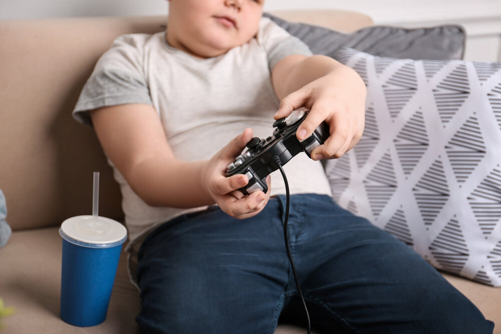

¿Cómo la tecnología fomenta la obesidad en niños?
En México, la promoción de alimentos y bebidas poco saludables en plataformas digitales es una práctica común.
Por ejemplo, los niños están expuestos a anuncios de productos no nutritivos en plataformas como YouTube, Facebook e Instagram,
lo que puede influir en sus preferencias alimentarias y llevarlos a elegir opciones menos saludables.
La disponibilidad creciente de alimentos poco saludables, como comidas preparadas y rápidas en México, es una preocupación.
Estos alimentos tienden a ser altos en calorías, azúcares añadidos y grasas saturadas, lo que podría contribuir al consumo excesivo
de calorías en los niños y, como resultado, al aumento de peso.
El uso frecuente de dispositivos electrónicos, como computadoras, tabletas y teléfonos inteligentes, puede disminuir la actividad física en niños.
Aquellos que pasan más tiempo frente a pantallas tienden a participar menos en actividades físicas, como juegos al aire libre o deportes,
lo que es crucial para mantener un peso saludable.
La reducción de la actividad física puede ser un factor que contribuya a la obesidad infantil.
